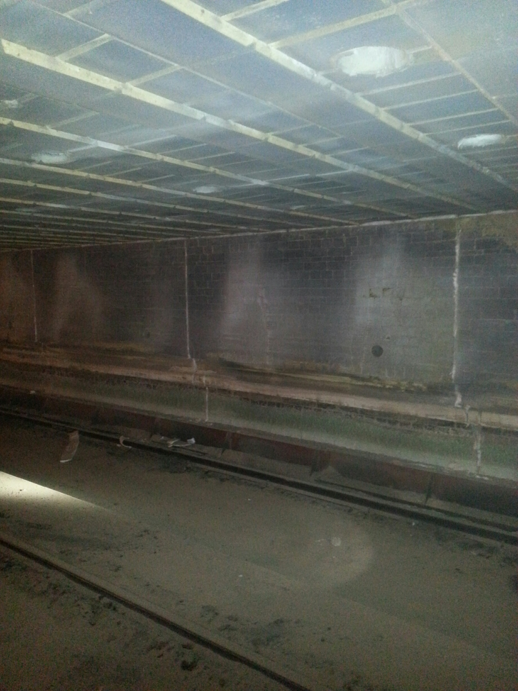

Brampton Brick's Ontario facility was dealing with high fuel consumption, refractory degradation from thermal shock, and lengthy kiln start-up times. ITC Coatings applied ITC 100HT to the hot face of Kiln #1, delivering 10% fuel savings, 2--3x refractory life extension, and 50% reduction in start-up times -- all from coating only the hot zone.
Kiln #1 at Brampton Brick is 300 feet long inside refractory and approximately 25 feet wide by 7 feet high. The kiln has two distinct lining configurations:
The facility needed to address two critical issues:
Working with Norheat Treatment, Inc. (ITC's Canadian application partner), the team recommended applying ITC 100HT directly to the hot face of the tile and brick lining in the hot zone only -- per the customer's request. This was not a full-kiln coating; only the most critical thermal zone was treated.
ITC 100HT provides two primary benefits in kiln applications:

Interior of Brampton Brick Kiln #1 showing the ITC 100HT coated hot face
Average daily fuel consumption dropped measurably after coating application:
| Daily Consumption | Annual Cost | |
|---|---|---|
| Before ITC | 252,680 m³/day | $276,685 |
| After ITC | 228,000 m³/day | $249,660 |
| Savings | 24,680 m³/day (10%) | $27,025/year |
Calculated at $3.00 per 1,000 m³ of natural gas.
With ITC 100HT protecting the hot face from thermal shock and spalling, refractory life was extended 2 to 3 times longer than the uncoated baseline. This means fewer relines, less downtime, and lower maintenance costs.
One of the most impactful results was a 50% reduction in kiln start-up times. The coating's thermal properties help the kiln retain heat more effectively, meaning less energy and time are needed to bring the kiln back to operating temperature after a shutdown. For operations that cycle their kilns, this translates directly into more productive hours per year.
| Annual Fuel Savings (Kiln #1) | $27,025 |
| Refractory Life | 2--3x longer |
| Start-Up Time Reduction | 50% |
| Area Coated | Hot zone only (not full kiln) |
Important note: These results were achieved by coating only the hot zone of a 300-foot kiln. Coating the full kiln length would increase fuel savings proportionally.
The Brampton Brick case study is particularly compelling because it demonstrates results from a partial application. If coating just the hot zone delivered 10% fuel savings and 50% faster start-ups, the potential for a complete kiln coating is even greater.
For brick manufacturers, ceramics producers, and any tunnel or shuttle kiln operation, ITC 100HT offers a low-risk, high-return investment in energy efficiency and refractory protection. Contact ITC Coatings to discuss your kiln operations.
ITC Coatings has been engineering high-temperature ceramic coating solutions for kiln and furnace operations since 1980. Application partners like Norheat Treatment, Inc. provide local installation services across North America. Based in San Angelo, Texas.
Ready to reduce your energy costs and extend refractory life?
Email: info@itccoatings.com
Phone: (325) 340-1304
Web: itccoatings.com